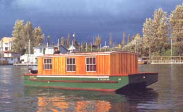
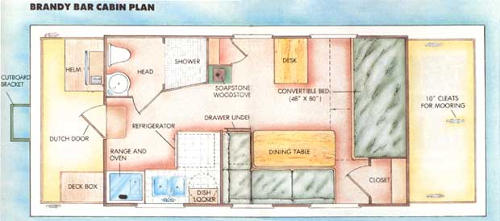
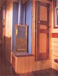
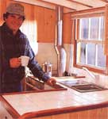
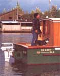
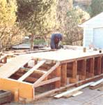

Houseboat Living: The Return Of The Brandy Bar
Living on a houseboat, including how to build a houseboat with diagrams and instructions.
By Richard Trachi
May/June 1989
During the summer of 1850, the American schooner Sam'I Roberts ran aground on a bar in the Umpqua River along the southern Oregon coast. While waiting for a high tide to refloat the ship, the crew broke into the captain's liquor locker to help pass the time. Thus, the bar appropriately became known as Brandy Bar. A century later, Brandy Bar became mobile when the name appeared on a towboat built for the Umpqua Navigation Company and used to work the waters of the Umpqua River.
Another three decades have since passed, and Brandy Bar has come to grace yet another hull. My father, a naval architect and designer, and I launched my little houseboat on the Columbia River in Portland, Oregon, on September 21, 1988, and christened her as a tribute to the towboat of the Umpqua and the history that preceded her.
I built Brandy Bar as a low-cost way to live on the water near my other boat, the 27-foot sloop Kavik, and my work as a sailing instructor. With an overall length of 25 feet, a beam (width) of 10 feet and a 9' X 17' cabin, she provides a living space comparable in size to that of a 30- to 40-foot conventional boat. Yet the cost , time and skills required to build her were modest compared with the demands of building a conventional craft. What's more, though I'm accustomed to living on water-and, in fact, prefer it to the landlubber's life-- think Brandy Bar offers any single person or couple an attractive, economical alternative to terrestrial real estate. (And when you live aboard a boat, your back yard can be mighty extensive!)
Here in Oregon, as in most states, a houseboat (as opposed to a floating house) is a vessel, not real estate. Thus Brandy Bar is subject to nothing other than a minimal registration fee, nor does she have to comply with the prevailing building codes. There are, of course, standards for vessels administered by the Coast Guard and state authorities and dictated by good sense. Brandy Bar's basic seaworthiness is guaranteed by my father's expertise as a naval architect, and she does meet all Coast Guard requirements for personal flotation devices, fire extinguishers, ventilation, lights, etc. Complying with boating regulations is, nonetheless, much less expensive than meeting housing stipulations, which-for one thing-often restrict the minimum size of a dwelling.
In terms of sheer economics, houseboat living is very attractive. A houseboat like Brandy Bar can be built for anywhere between $8,000 and $20,000, depending on the details. Moorage in the Portland area runs $70 to $ 100 per month for a vessel of Brandy Bar's size, and her license costs $30 every two years. Property tax is treated as it would be for any boat. Utilities run less than for an average house, since Brandy Bar is small, insulated and tightly built.
But there's really a lot more to recommend houseboat living than mere economics. Anyone familiar with boats knows how a well-designed vessel makes efficient use of space. This is not only because there's so little of it but also because being at sea requires that everything be securely stored. Safe and satisfying seamanship necessitates tidiness and organization-form must first follow function. Thus one of the beauties of calling a good boat home is the order it brings to daily routine. Though there is often little sense of being afloat at a calm moorage in a boat as stable as Brandy Bar, living aboard is still distinctly different from life in the usual home.
The fact that I plan mainly to moor Brandy Bar and live aboard her should not dissuade others from considering building a houseboat like her to cruise sheltered waters. She's powered by a 28-horsepower outboard motor, which can push her 6,000 pounds at a cruising speed of over 7 mph-an adequate and pleasant rate in protected waters. Ordinarily, I favor inboard diesels, but an outboard is a good choice for a houseboat, since it takes up no interior space, gives good handling, and is simpler and less costly.
Perhaps Brandy Bar's greatest beauty is that she requires no boat-building skills to assemble. Her construction-which consists of plywood over standard framing-more closely resembles that of a house than a boat, so basic carpentry skills and tools are all that are needed. If you like, she can be finished as a yacht, with fine joiner work of teak and mahogany and beautiful fittings of polished brass, bronze and stainless steel. (I admit that my tastes run that way; for example, though my father specified marine aluminum windows, I chose instead to make my own double-hung units from Alaskan cedar and fir.) Or, if your time and budget are limited, you could finish her simply, with painted plywood surfaces and inexpensive recreational vehicle appliances, lights, plumbing and other fittings.
The completed houseboat is fully capable of cruising sheltered waters.
Since Brandy Bar is meant to be lived aboard mainly at a marina, she's wired for 110-volt household current. A special heavy shore-power cord connects her three 30-amp circuits to a dockside outlet. The circuit box is specifically designed for marine use but is similar to common household service panels. Even though a home-built boat for private use doesn't have to be wired to code in Oregon or many other areas, wiring is no place to cut corners. Brandy Bar meets all electrical code requirements. For electricity on the go, you can either use a 12-volt system and batteries or fit a gasoline-powered 110-volt generator, as I did. Bear in mind that 110-volt wiring must be kept separate from 12-volt circuits, which can complicate wiring. In general, electrical design is a good place to call in expert help if you're not sure of yourself.
Water supply can be as simple as a hose from a dockside faucet connected to the boat through a pressure-regulated valve, such as those commonly used on recreational vehicles. But if you plan to leave the dock, you'll need a 14- to 40-gallon water tank and either hand pump-equipped faucets or a 12-volt pump to provide water pressure. Again, this sort of hardware is available inexpensively from recreational vehicle equipment suppliers.
Water and space heating, as well as cooking, can be provided in several ways. Perhaps the simplest is to use small household electrical appliances for the stove, refrigerator, water heater and space heater. But if you'd rather not be completely dependent on the dockside electrical umbilical for your services, you could use the recreational vehicle approach and install propane appliances. However, propane can be very dangerous on a boat unless the system is properly installed, maintained and used. Keep all propane tanks on deck, where any escaped fuel will go into the atmosphere rather than settling into the boat's bilge. Another alternative, the traditional marine approach, would be to use kerosene lighting, heating and cooking appliances. Then again, in the Pacific Northwest most commercial fishing boats have diesel appliances, which are expensive to buy but very economical to operate.
Brandy Bar required no boat-building skills in its assembly.
My own system is a hybrid: My water heater is a 10-gallon electric model, which I can either do without or power with my Honda generator when cruising; my refrigerator is also 110-volt electric; my cookstove is a Dickenson Pacific diesel-oil burner; and I heat the boat with a very small wood- or coal-burning soapstone stove.
Brandy Bar has a full head (bathroom) with a shower, washbasin, vanity and toilet. I tiled the shower enclosure and floor, but a manufactured fiberglass unit would also be workable. The toilet can be any of several different types of Coast Guard-approved marine units. Some of these have holding tanks; some recirculate but still must be pumped eventually; and some treat the waste. Your choice should be based on the availability of pumping services and of dockside facilities. Some marinas provide shore side rest rooms, showers and sometimes even laundries for their live-aboard tenants. Since my docking place offers those conveniences, I use a unit with a small holding tank.
If you have a yen to live on water but have always figured it was impractical, give houseboat living a closer look. Visit a marina that welcomes live-aboard residents, and strike up a few conversations. If my experience is typical, you'll meet some of the friendliest, most interesting, most ingenious people around. Here at my marina community on the Columbia, for example, we've got everything from custom boats like Brandy Bar to commercial aluminum houseboats to a residentially converted WW II steel lifeboat. It's not your ordinary neighborhood, and we like it that way.
Editor's Note: For those of you interested in more detail on building Brandy Bar, we've arranged with Rich and his father, Al, to offer a study booklet showing floor plans, profiles and sections. The package will be available June 1, and can be ordered by sending $25 to Houseboat Plans, Mother Earth News, P.O. Box 70, Hendersonville, NC 28793.
BUILDING THE BRANDY BAR
BRANDY BAR REPRESENTS BUT ONE application of my father's versatile houseboat design. She has performed well, but there are certainly other good approaches to her construction. Therefore, while I tell you how I built Brandy Bar, I'll include options in parentheses along with my methods. Brandy Bar's hull consists of 3/4" Simpson marine plywood over pressure-treated fir framing on 2' centers. Her structure is so simple she could be built with nothing more than a circular saw, a framing square and basic hand tools. The side and bottom frame members are fastened together with stainless steel (hot-dipped galvanized) bolts, and the plywood planking is attached at the chines and seam battens using No. 12 X 2" stainless steel (hot-dipped galvanized) bolts. Galvanized common nails are sufficient for nailing the plywood to the framing. All seams and joints are thickly coated with 3M 5200 (Sikaflex) one-part polysulfide adhesive sealant. Fiberglass cloth and resin laminated onto the hull ensure a long life. The decks are 1/8" Simpson Skidguard plywood. The sides of the house are a sandwich of 3/4" extruded-polystyrene insulation between two sheets of 1/2" plywood. On top of this, I sided the house with 1/4" tongue-and groove red cedar. All the hull rub rails are purpleheart. As I mentioned, I made my own windows from Alaskan cedar, but aluminum marine or recreational vehicle windows would save some time and effort. The house roof is 1/2" plywood with 10-ounce canvas set in adhesive. Both the roof and the deck are slightly arched from beam to beam to permit the surfaces to drain properly. I hand-built all the interior cabinets from a variety of durable, attractive woods, including mahogany, Alaskan cedar and pine. All of the cabinets, as well as the interior partitions for the head and the fore closet, were installed before the floor went in, to allow full access to the boat's bilge for maintenance. The floor is assembled from imbuia in sections that can be easily lifted to get below. My galley counter is tiled, as are the floor and walls of the head. The berth slides open and closed-serving as a couch when closed and a double bed when open. (Double-duty furniture is standard fare on a boat.) I'll admit that I approached building my houseboat, and particularly its interior, as an exercise in woodworking. But your finish work can be as elegant or as simple as your skills and interests dictate. just use sound construction methods as you go, and you'll end up with a fine houseboat.
Check out the digital and paper plans for the Brandy Bar houseboat.
|
 The houseboat's interior is snug, functional and well equipped for bachelor living. |
 |
 |
|
 |
 |
 |
|
 |
|
|